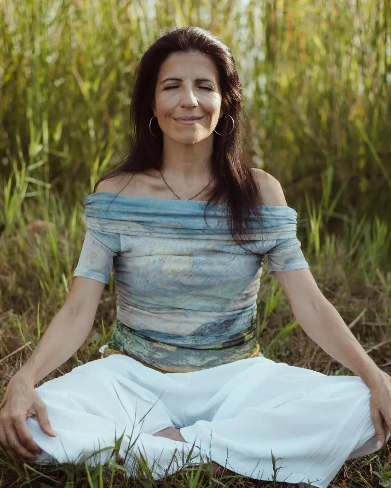

Programa Online Completo
El viaje de regreso a ti.
Un proceso de transformación personal para comprender tu historia, sanar tus heridas y volver a vivir desde tu verdadera esencia.
«Cambia tu forma de ver las cosas y cambiarás tu vida»
— Transi Aracil González
Empieza hoy tu camino de regreso a ti.
El Punto de Partida
¿Sientes que has dejado de escucharte?
Quizá llevas años ocupándote de todo y de todos. Tal vez te exiges demasiado, te cuesta poner límites o sientes que repites situaciones que te hacen sufrir. Puede que, aunque aparentemente todo esté bien, por dentro exista una sensación de vacío, cansancio o desconexión contigo misma.
¿Quién soy realmente?
¿Por qué sigo repitiendo los mismos patrones?
¿Por qué me cuesta tanto cambiar?
Si te reconoces en estas preguntas, quiero decirte algo importante: el problema no eres tú.
Muchas de las dificultades que experimentamos en la vida tienen su origen en las experiencias vividas, las creencias aprendidas y las estrategias de supervivencia que desarrollamos para adaptarnos.
Pero aquello que aprendiste también puede ser comprendido, transformado e integrado. Y ese es precisamente el propósito de este proceso.
El Programa
Qué es Reconexión Esencial
Reconexión Esencial es un programa online de crecimiento personal y transformación interior, diseñado para acompañarte en un viaje de regreso hacia ti mism@. Un recorrido profundo y práctico para que puedas:
- check_circle Comprender por qué te ocurre lo que te ocurre.
- check_circle Identificar y transformar las creencias y patrones que te limitan.
- check_circle Sanar heridas emocionales del pasado.
- check_circle Liberar miedos y bloqueos.
- check_circle Fortalecer tu autoestima y confianza.
- check_circle Reconectar con tus valores y propósito.
- check_circle Vivir con mayor paz, autenticidad y plenitud.
Un proceso para volver a ti
Este programa no pretende convertirte en otra persona. Su propósito es ayudarte a recordar quién eres cuando dejas de vivir desde el miedo, la exigencia o las expectativas de los demás.
Porque cuando comprendes tu historia, puedes dejar de luchar contra ella. Y cuando te aceptas, comienza la verdadera transformación.

Tu Guía
Con Tránsito Aracil
Psicóloga integral especializada en regulación del sistema nervioso, Tránsito acompaña procesos de transformación real desde el cuerpo, la emoción y la consciencia — no desde la teoría sola.
Reconexión Esencial reúne años de experiencia clínica en un programa pensado para que puedas transitar tu propio proceso de regreso a ti, con la misma calidez y rigor de un acompañamiento personal.
La Metodología
Herramientas que utilizaremos
Un enfoque integral que combina distintas disciplinas para trabajar desde la mente, la emoción y el cuerpo.
La Transformación
Qué puede aportarte este proceso
- check_circle Más autoestima y confianza.
- check_circle Más serenidad y paz interior.
- check_circle Mayor comprensión de tu historia.
- check_circle Liberarte de patrones antiguos y repetitivos.
- check_circle Aprender a poner límites.
- check_circle Más conexión con tus emociones y consciencia.
- check_circle Recuperar la alegría y la vitalidad.
- check_circle Descubrir tus valores y propósito.
- check_circle Vivir con más autenticidad y coherencia.
El Recorrido
El viaje que vas a recorrer
Un recorrido progresivo, módulo a módulo, para reencontrarte contigo misma.
Descubre las máscaras y personajes que has desarrollado y comienza a reconectar con tu esencia.
Identifica las creencias que condicionan tu vida y aprende a transformarlas.
Comprende y sana las heridas emocionales de abandono, rechazo, injusticia, frustración y traición.
Aprende a vivir con más autenticidad y a dejar de actuar únicamente para agradar o encajar.
Descubre cómo el cuerpo guarda experiencias y aprende a liberar tensiones y bloqueos.
Comprende las dinámicas familiares que han influido en tu forma de vivir y relacionarte.
Cierra ciclos, libera cargas emocionales y aprende a vivir con mayor ligereza.
Descubre qué es verdaderamente importante para ti y hacia dónde deseas dirigir tu vida.
Aprende a vivir más conectada con el presente y a disfrutar de una vida más consciente.
¿Ya sientes ganas de comenzar tu propio recorrido?
Quiero Comenzar mi Viaje arrow_forwardEl Formato
Cómo es el programa
Un curso online grabado para realizar a tu ritmo. Cada módulo incluye:
-
menu_book
Parte teórica
Para comprender las causas profundas de tus dificultades y aprender nuevas formas de relacionarte contigo.
-
spa
Parte práctica
Con ejercicios, dinámicas y herramientas para integrar los cambios en tu vida cotidiana.
-
schedule
A tu propio ritmo
Podrás avanzar respetando tus tiempos y volver a las lecciones siempre que lo necesites.
Programa online completo
9 módulos grabados, con parte teórica, parte práctica y ejercicios de integración en cada uno.
¿Es para ti?
Este proceso es para ti si...
- check Deseas conocerte más profundamente.
- check Sientes que ha llegado el momento de priorizarte.
- check Quieres dejar de repetir los mismos patrones.
- check Buscas una transformación profunda y consciente.
- check Estás comprometid@ con tu crecimiento personal.
- check Deseas vivir con más paz y autenticidad.
Si te reconoces en esta lista, este es tu momento.
Quiero Comenzar mi Viaje arrow_forwardQuizás no necesitas exigirte más.
Ni demostrar más.
Ni seguir siendo fuerte todo el tiempo.
Quizás solo necesitas volver a escucharte.
Volver a tu esencia.
Volver a ti.
Testimonios
Historias de quienes ya iniciaron su camino
"[Espacio reservado para un testimonio real de una participante del programa.]"
"[Espacio reservado para un testimonio real de una participante del programa.]"
Sustituye estos espacios por testimonios reales de participantes antes de publicar la landing.
Únete a quienes ya decidieron reconectar consigo mismas.
Quiero Comenzar mi Viaje arrow_forwardPreguntas Frecuentes
Antes de comenzar
Es completamente grabado: accedes a los 9 módulos y avanzas a tu propio ritmo, sin depender de horarios fijos.
No. El programa está diseñado para acompañarte desde donde estés, con una parte teórica que da contexto antes de cada práctica.
[Completa aquí la duración exacta del acceso — por ejemplo, acceso de por vida o durante X meses.]
[Completa aquí el detalle del acceso — plataforma, email de bienvenida, plazo de activación, etc.]
[Completa aquí la política de garantía o devolución, si existe.]
Imagina
¿Cómo sería tu vida si...?
- arrow_forward Te sintieras suficiente.
- arrow_forward Pudieras poner límites sin culpa.
- arrow_forward Aprendieras a tratarte con más amor.
- arrow_forward Vivieras con más calma y confianza.
- arrow_forward Dejaras de repetir patrones que te hacen sufrir.
- arrow_forward Descubrieras quién eres realmente.
- arrow_forward Sintieras más paz y plenitud.
Ese camino es posible.
Y comienza con una decisión.
Ha Llegado el Momento de Volver a Ti
Porque cuando te conoces, te comprendes.
Cuando te comprendes, te aceptas.
Y cuando te aceptas, comienza la verdadera transformación.
Reconexión Esencial
El viaje de regreso a tu esencia
Programa online completo
- check_circle 9 módulos grabados
- check_circle Parte teórica y parte práctica
- check_circle Ejercicios y dinámicas de integración
- check_circle Meditaciones y herramientas transformadoras
- check_circle Acceso para realizarlo a tu ritmo
Empieza hoy tu camino de regreso a ti.